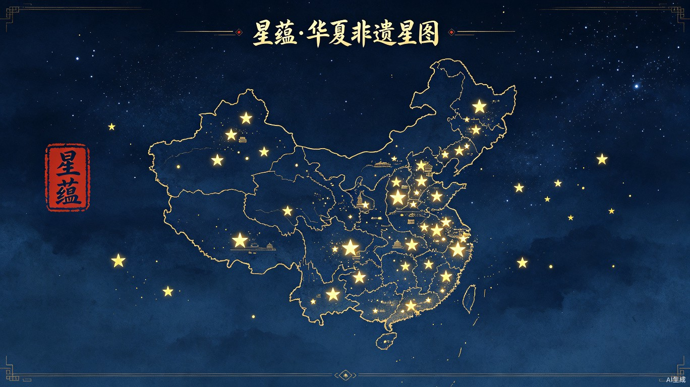
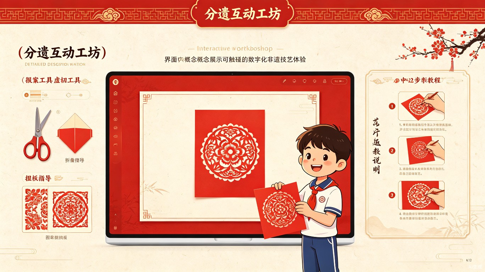

AI带你游非遗
星蕴·华夏非遗星图
让每一个孩子都能触摸千年文化的温度
AI驱动的K12沉浸式非遗文化学习平台
智能导览 · 星图探索 · 互动体验 · 项目学习
项目概述

这是一个由AI驱动的非遗文化沉浸式学习平台。"星蕴"取"繁星璀璨，文化蕴藉"之意—— 我们将中华大地上的每一项非物质文化遗产比作一颗星辰， 它们散布在960万平方公里的土地上，汇聚成一条璀璨的文化银河。
当K12学生打开「AI带你游非遗」，映入眼帘的不是枯燥的知识列表，而是一幅以中国地理为底、以繁星为标的 华夏非遗星图。AI智能导览员全程陪伴，学生可以像仰望星空一样，在地图上发现散落在各地的非遗瑰宝， 点击每一颗"星星"，就能开启一段穿越千年的文化之旅。
平台以项目式学习（PBL）为核心教学设计理念，不仅让学生"看"非遗，更要让他们"做"非遗、 "研究"非遗。每一个非遗项目都是一个可探索的学习主题，学生可以围绕它开展跨学科的探究性学习， 在真实的问题情境中建构知识、培养能力、传承文化。
地理星图
以中国地图为载体，非遗项目化作繁星点缀其间，按地理位置直观呈现文化分布格局
时间长河
每个非遗项目配有动态时间轴，从起源到发展，让学生触摸历史的脉络与传承的力量
互动工坊
可触碰的数字化技艺体验，让学生亲手"做"非遗，在实践中感受匠心之美
传承连线
一键直达非遗传承人主页，聆听他们的故事，甚至可以线上拜师、实时互动
项目学堂
内置PBL项目模板，支持跨学科探究，配套学习支架与评价量规
AI导览
智能问答、个性化推荐、故事讲解，AI向导全程陪伴你的非遗文化之旅
中华美学
朱砂红、青花蓝、琉璃黄、玉脂青，用中国传统色打造沉浸式文化视觉体验
核心功能设计
五大核心模块，从探索到体验、从学习到创作，构建完整的非遗文化学习闭环。
华夏星图 — 地理文化探索
平台主界面是一幅可交互的中国地理星图。每一项非遗项目都是地图上一颗闪烁的星辰， 星辰的大小代表项目的级别（人类非遗/国家级/省级），颜色代表所属门类。
学生可以缩放、拖拽地图，点击任意一颗星星，即可展开该非遗项目的信息卡片， 显示项目名称、所属地区、门类标签和一句"非遗一句话"介绍。
支持按门类筛选、按地区筛选、按级别筛选，还可以切换"星空模式"和"地图模式"， 让探索过程充满发现的乐趣。
时空长廊 — 历史时间轴
进入每个非遗项目详情页，首先呈现的是一条动态历史时间轴。 时间轴以可视化方式展现非遗项目的起源、发展、鼎盛、衰落与复兴等关键节点。
学生可以左右滑动时间轴，点击每个时间节点查看对应的历史故事、文物图片、 文献记载等丰富素材。时间轴还会关联当时的历史背景，帮助学生建立时空观念。
时间轴不仅是展示工具，更是互动体验：学生可以"穿越"到某个朝代， 以第一人称视角体验当时的非遗文化生态。
匠人面对面 — 传承人连线
在每个非遗项目详情页的显著位置，设有"寻找传承人"按钮。 点击即可进入该项目非遗传承人的专属页面，近距离接触这些文化守护者。
传承人主页包含：个人简介、从艺经历、代表作品展示、传承故事视频、 经典语录，以及实时互动通道——学生可以向传承人提问、 预约线上公开课、甚至报名参加传承人工作室的暑期营。
传承人模式让非遗不再是书本上遥远的概念，而是有温度、有故事的"身边人"， 激发学生对传承人的敬意和对非遗的热爱。

百工工坊 — 互动体验
"纸上得来终觉浅，绝知此事要躬行。"百工工坊是平台的互动体验核心， 让学生通过数字化手段亲手体验非遗技艺的制作过程。
在剪纸工坊，学生可以学习基础纹样，用手指或鼠标"剪"出自己的作品， 系统会即时评价并给出改进建议；在皮影工坊，学生可以操作皮影人物， 演绎一段自己的皮影戏。
每个工坊都配有分步教学视频、虚拟工具包、作品展示区。 优秀作品还可以提交给传承人点评，获得"匠人印记"认证。
项目学堂 — PBL学习中心
项目学堂专为学校和教师设计，提供完整的项目式学习（PBL）解决方案。 每个非遗项目都配套了分学段的PBL项目包，教师可以一键使用，也可以自由修改。
项目包包含：驱动性问题设计、学习目标与课标对应、探究任务分解、 学习资源包、评价量规、成果展示建议等，覆盖项目实施的全流程。
平台还支持班级管理、小组协作、过程性评价等功能，让非遗主题的项目式学习 真正在课堂落地生根。
内容体系
全面覆盖国家级非物质文化遗产十大门类，按地理区域系统梳理， 内容深度适配K12全学段认知水平。
十大非遗门类分布
地理文化分布（八大文化区）
PBL学习设计
以项目式学习为核心教学法，让学生在真实问题中探究非遗、理解非遗、传承非遗。
🎯 驱动性问题
每个非遗项目都设计了富有挑战性的驱动性问题，激发学生的好奇心和探究欲，让学习从"要我学"变为"我要学"。
🔍 持续探究
提供多维度的学习资源和探究支架，引导学生经历"提问—调研—分析—创造"的完整探究过程，培养研究能力。
🤝 协作共创
支持小组协作模式，学生可以分工合作、头脑风暴、互评反馈，在协作中学会沟通与尊重，培养团队精神。
🎪 公开展示
每个项目都有明确的成果产出，学生作品可以在平台公开展示，甚至有机会被传承人点赞，获得真实的成就感。
学习路径与转化
从发现一颗"星星"开始，学生的学习旅程自然地层层深入：好奇 → 探索 → 体验 → 创作 → 分享。 每一步都有对应的功能模块支撑，形成完整的学习闭环。
跨学科融合示例
非遗文化天然具有跨学科属性。以"苏绣"项目为例，一个完整的PBL项目可以融合以下学科知识：
苏绣相关传说故事
江南经济文化背景
图案设计与创作
织物材料学
几何构图原理
丝绸产地分布
视觉设计系统
取意中华传统美学，用现代设计语言重新诠释东方韵味。 每一抹色彩、每一根线条，都承载着文化的温度。
中国传统色板
设计理念
「简而不陋，华而不繁」是整体视觉设计的核心原则。 我们追求既有中华传统美学的厚重感，又符合当代青少年审美的视觉语言。
星图主界面采用深邃的靛蓝色夜空作为背景，中国地图轮廓以金线勾勒， 非遗项目化作繁星点点，鼠标悬停时星光闪烁、光晕扩散，营造"仰望星空"的沉浸感。
详情页采用宣纸纹理底色，搭配朱红印章、墨色文字、青花装饰， 如同打开一本精美的古籍，但交互方式却是现代化的——滑动、点击、拖拽皆流畅自然。
闪烁吸引注意力
传承古籍阅读体验
认证与收藏仪式感
东方美学的动态表达
技术实现方案
采用现代Web技术栈，确保优秀的性能表现和流畅的交互体验， 同时支持多端访问。
核心技术亮点
WebGL星图渲染
基于Three.js构建高性能的3D星图地图，支持流畅的缩放、旋转、拖拽操作。 上千个非遗项目点以粒子形式渲染，保证60fps流畅体验。星空背景采用程序化生成， 每次进入都有微妙的不同，增加探索感。
交互式时间轴
自研的时间轴组件，支持横向滑动、节点点击展开、朝代背景切换。 结合GSAP动画库，实现丝滑的过渡效果。时间轴数据与历史事件库关联， 可以智能推荐同时期的其他文化事件。
Canvas互动工坊
基于Canvas API实现各类非遗技艺的数字化模拟。剪纸工坊支持矢量路径实时计算、 皮影工坊支持骨骼动画系统、陶艺工坊支持3D塑形。低门槛、高趣味， 让学生在游戏化体验中学习技艺原理。
PBL学习管理系统
内置完整的项目式学习管理模块，支持班级创建、小组分工、任务分配、 过程性记录、多元评价、成果展示等功能。教师端提供丰富的教学资源包 和数据看板，轻松开展非遗主题的项目式学习。
创新亮点
七大创新维度，AI赋能非遗文化教育全新范式。
AI智能导览 — 专属非遗文化向导
内置AI智能导览员，全程陪伴学生的非遗探索之旅。学生可以用自然语言向AI提问， AI会根据学生的年龄、兴趣、学习进度，个性化推荐非遗项目、讲解历史故事、 解答疑难问题。无论是"苏绣为什么这么细？"还是"皮影戏是怎么传到西方的？"， AI都能给出生动有趣的回答，让学习像聊天一样轻松自然。
星图叙事 — 地理与文化的双维探索
打破传统列表式知识呈现方式，以地理星图为载体，让学生在探索中国大好河山的过程中 自然地发现各地非遗瑰宝。"一方水土养一方文化"的理念通过可视化方式直观传达， 培养学生的文化地理意识。每一颗星星背后都是一个故事，都是一方水土的人文结晶。
可触碰感 — 让非遗从"看"到"做"
传统非遗学习大多停留在"看"的层面，学生缺乏参与感。百工工坊通过数字化交互技术， 让学生可以亲手"做"非遗——剪一幅剪纸、绣一方手帕、捏一个陶艺、演一段皮影。 虽然是虚拟体验，但完整还原了技艺的核心步骤和原理，为后续线下实践打下基础。
活态传承 — 连接传承人与新生代
非遗不是躺在博物馆里的文物，而是活着的文化传统。平台通过"匠人面对面"功能， 让学生可以直接接触到非遗传承人，听他们的故事、看他们的作品、甚至向他们提问。 这种"人与人"的连接，比任何知识传授都更能激发文化认同和传承意愿。
PBL深度融合 — 项目驱动的深度学习
平台不只是一个资源库，更是一个学习设计系统。内置的PBL项目学堂， 让教师可以轻松开展非遗主题的项目式学习。学生在真实问题驱动下， 经历完整的探究过程，实现知识的深度建构和核心素养的全面发展。 这是对传统"教师讲、学生听"模式的根本变革。
跨学科大概念 — 打破知识壁垒
非遗文化天然具有跨学科属性。平台以"大概念"为统领，将语文、历史、美术、 音乐、科学、数学等学科知识融入非遗主题学习中。学生在研究一个非遗项目时， 同时获得多学科的知识滋养，建立起完整的知识网络，培养综合思维能力。
中华美学沉浸 — 视觉即教育
视觉设计本身就是一种文化教育。从中国传统色板的选用，到印章、卷轴、水墨等元素的运用， 平台的每一处视觉细节都在传递中华美学精神。学生在使用过程中，潜移默化地接受 传统美学的熏陶，培养文化审美情趣。这是"润物细无声"的美育实践。
价值与愿景
让非遗文化的繁星，点亮每一个孩子的文化星空。
教育价值
创新非遗教育模式，让文化传承从被动接受变为主动探索， 培养学生的文化自信、审美素养和创新能力
文化价值
系统性整理和传播非遗知识，让珍贵的文化遗产在数字时代焕发新生， 推动中华优秀传统文化的传承与发展
社会价值
连接非遗传承人与年轻一代，为传承人提供展示和传播的平台， 让更多人关注非遗、热爱非遗、参与非遗传承
我们的愿景
让每一个K12学生都能在「AI带你游非遗」中找到属于自己的文化之星， 让非遗文化成为伴随一生的精神财富